IDE tips and tricks
This page lists some of the more useful and/or less obvious features of the IDE.
Code editor
Font size
Hold down Ctrl while scrolling the mouse wheel to zoom in or out.
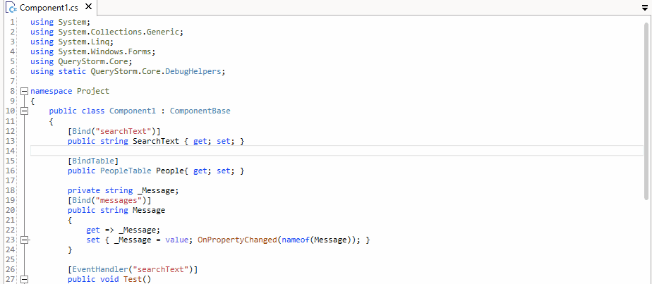
Code completion
Code completion is automatic in QueryStorm, but you can also invoke it explicitly by pressing Ctrl+Space.
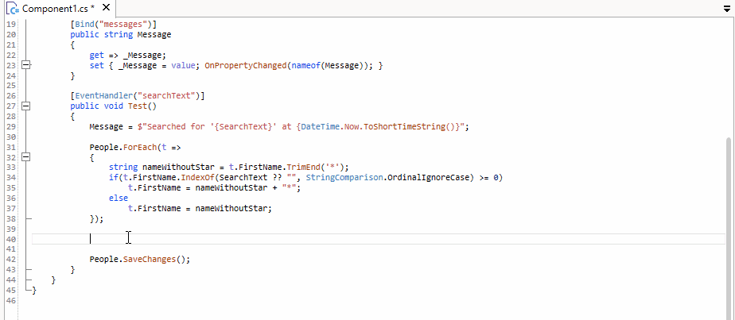
Code formatting
Messy code can be auto-formatted by pressing Ctrl+Shift+Enter.
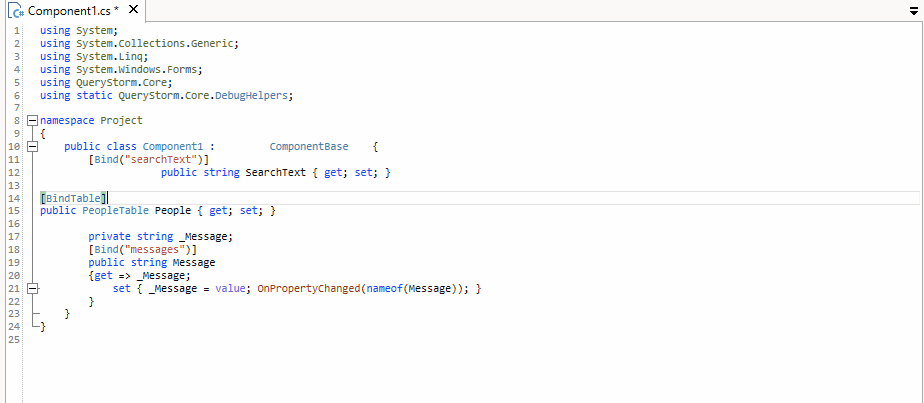
Go to matching bracket
Press Ctrl+] to navigate to the matching bracket. Hold down the Shift key to also select everything in between.
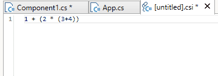
Go to symbol definition
Move the caret on top of a symbol, and press F12 to navigate to the symbol definition. This can be in a different file.
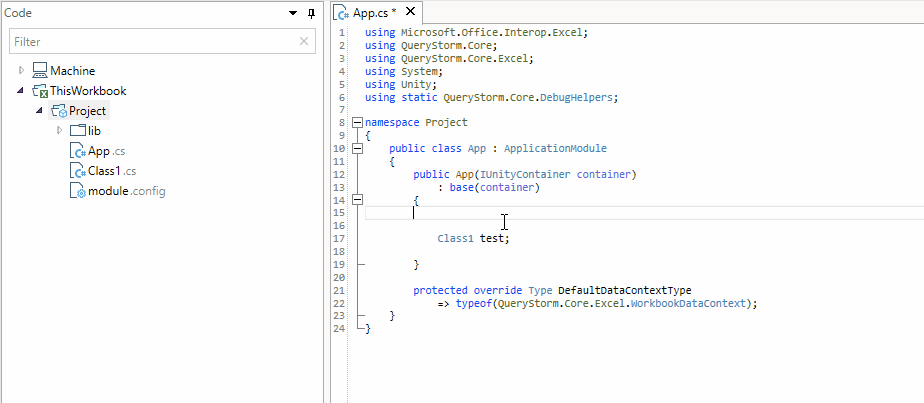
Rename symbol
Move the caret on top of a symbol and press F2 to rename it. This works across all files in the same project.
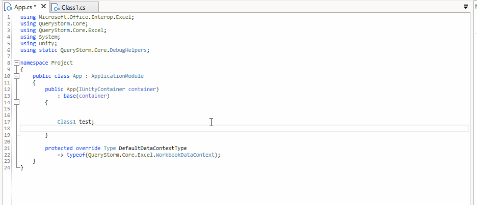
Star expansion (SQL)
Move the caret on top of a star symbol in the select list and invoke code-completion (Ctrl+Space) to expand the star into the columns it refers to.
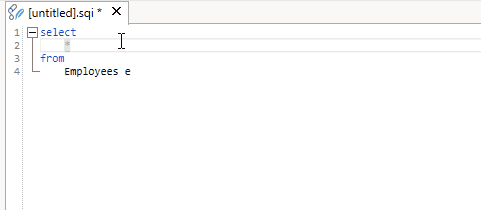
Column names are quoted if necessary.
Column disambiguation (SQL)
Move the caret on top of an ambiguous symbol and invoke code-completion (Ctrl+Space) to disambiguate it.
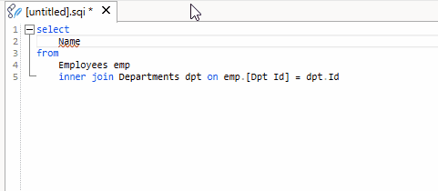
Column names are quoted if necessary.
Find in file
Press Ctrl+F to find a string inside the current file.
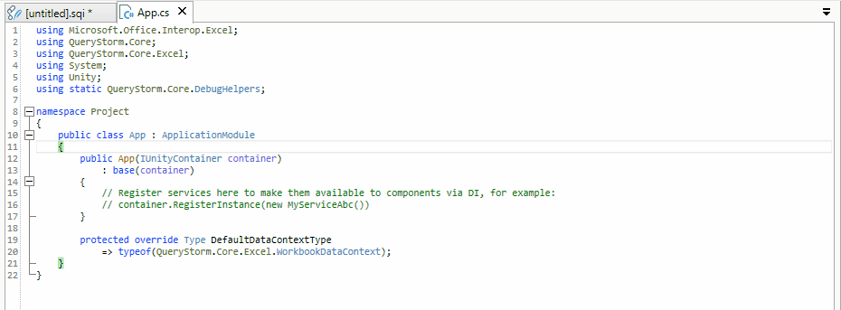
Supports regular expressions.
Replace in file
Press Ctrl+H to replace occurences of string inside the current file.
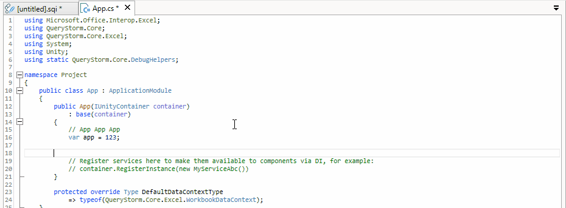
Supports regular expressions and replacement patterns.
Move lines up or down
To move a line up or down, hold down the Alt key while pressing Up or Down arrow keys.
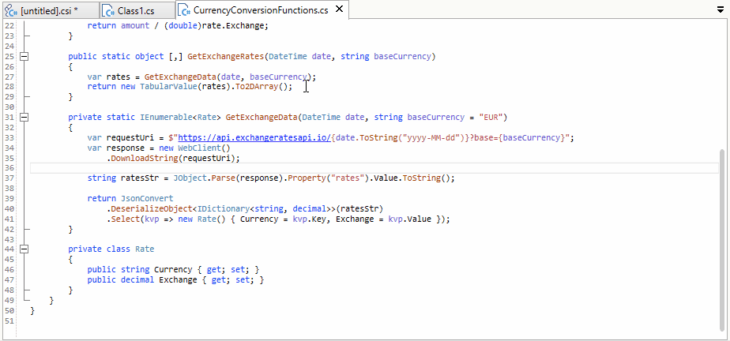
Code snippets
Use code snippets to write code faster. Use the Tab key to navigate between snippet placeholders, press Enter to complete the snippet.
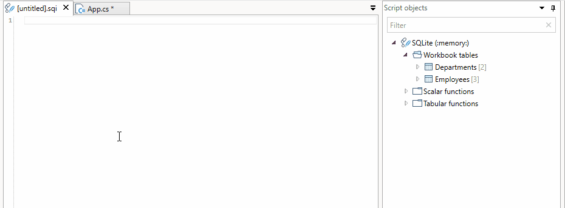
Snippets are language-specific, so depending on the current file, different snippets will be offered.
Configure shortcut keys
Shortcut keys can be configured in the plugin settings

Messages log
Message tooltips
Hover over an item to see a tooltip with its full contents. This is particularly helpful for errors since they tend to include multiple lines of text.
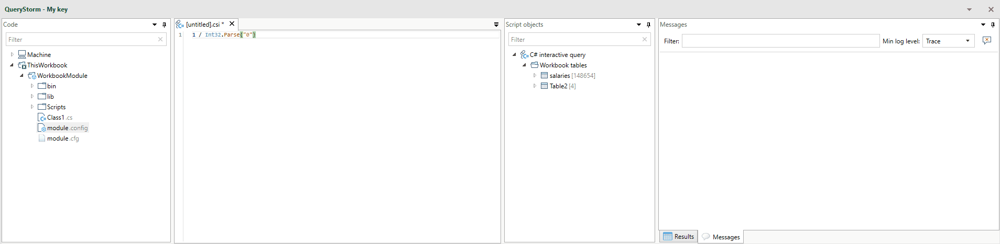
Navigate to an error in the source code
Double-click an error to navigate to its location in the source code.
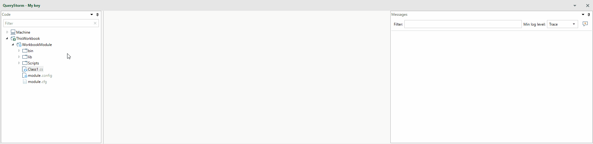
This does not work for errors that do not have source line information.
Code explorer
Find files and folders
To look for files and folders, use the filter box in the code explorer. Multiple search terms can be entered, separated by spaces. In order for a node to satisfy the filter, all search terms need to match the node or at least one of its ancestors.
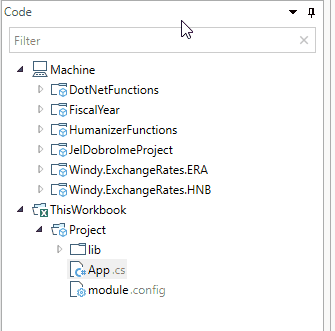
You can narrow down the search by entering one of the node's ancestors as a search term. If a folder satisfies the search criteria, all of its descendant nodes will also be visible.
Find files with text
To find a file that contains specific text put the text in quotes.
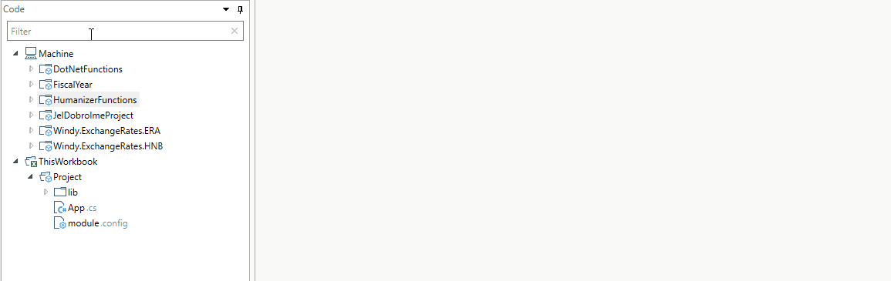
Text search can be combined with file/folder search, so you can, for example, look for files that contain the specified text but only inside a specific folder like so:
theFolder "text to search for"
Rename file
To rename a file, select it and press F2. Press Enter to accept the new name or Esc to cancel.
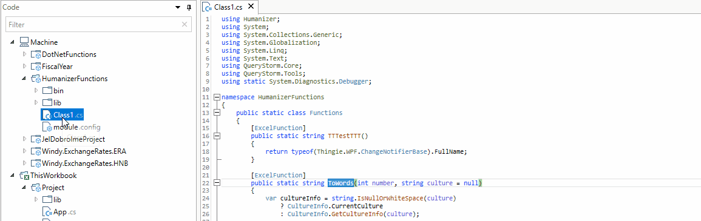
Files get their extension when they are created, subsequent changes to their extensions are not allowed.
Move files and folders
Use drag and drop to move files and folders.
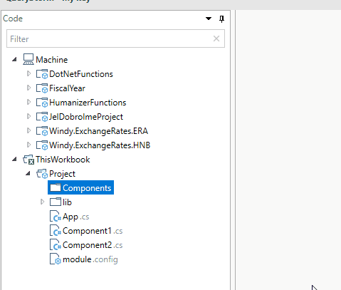
Some files and folders will refuse to be moved (e.g. bin and lib)
Object explorer
The object explorer shows items visible to scripts. Some of those items represent workbook tables, columns and ranges, and the object explorer allows you to interact with them.
Go to workbook object
Go to a workbook object by holding Ctrl and clicking the node in the object explorer.
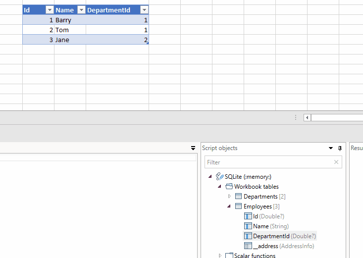
Rename workbook object
Press F2 to rename a workbook table, column, or named range.
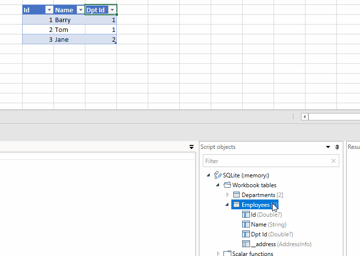
Renaming database objects is currently not supported.
Drop to editor
Drag and drop a node into the editor to insert its name. Hold down Alt while dropping to insert all of the node's children's names instead.
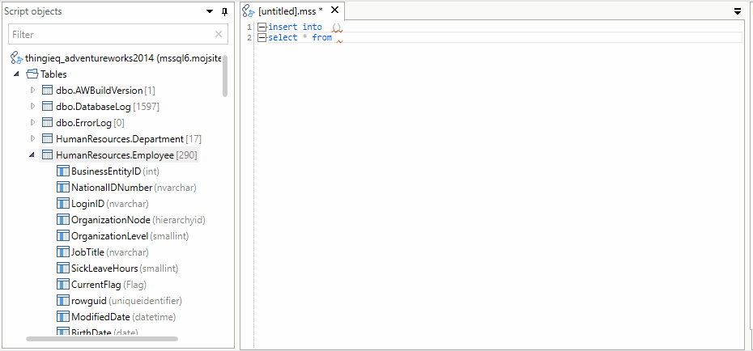
Names are quoted if needed.
Results grid
Sorting results
Click a column header to sort based on the column. Hold down Ctrl and click a different column to include the column as a secondary (or tertiary, or...) sort criteria.
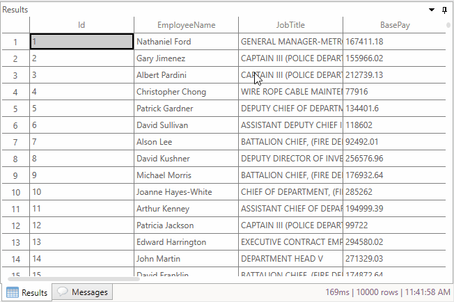
Go to address in Excel
If a row in the results grid contains an address, double-clicking the address, or the row header will select the row in Excel. Select multiple rows and press space to select multiple rows in Excel.
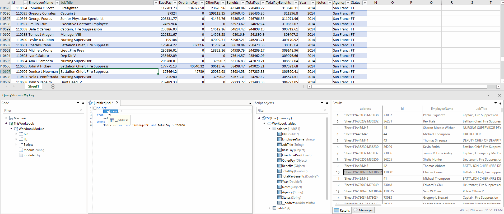
IDE Layouts
The IDE supports three different layouts:
- Bottom
- Right
- Undocked
Each of the three layouts is independent of the others, so moving panes in one layout does not affect pane positions in the other two. Switching between layouts as well as resetting a layout is done using ribbon buttons.